Большая книга Рецептов Minecraft
Здесь глобальный список рецептов, которые будут описываться на отдельных страницах
Материалы для крафта
Золотой слиток
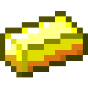
Изредка встречается в сундуках в заброшенной шахте, храме в пустыне и храме в джунглях.
Переплавка золотой руды
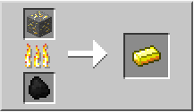
Распаковка золотых блоков
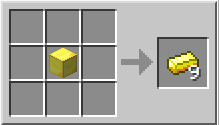
Крафт из золотых самородков, которые выпадают с зомби-свиночеловека в
аду.
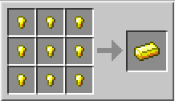
Железный слиток

Железные слитки имеют шанс появления в сокровищницах, в количестве 1-4 штуки и в количестве 1-5 штук в крепостях, заброшенных шахтах, деревнях и адских крепостях.
Железный голем дропает 3-5 железных слитков при смерти. Зомби имеют небольшой шанс дропнуть один железный слиток.
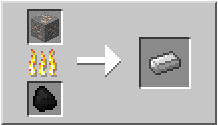
Основной рецепт получения железа - переплавка из железной руды в плавильне
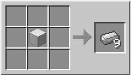
Как и золото, железо можно распаковывать из железных кубиков.
Алмаз
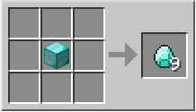
Алмаз получают из алмазной руды. Также его можно распаковать из алмазного куба, если вы или кто-то из игроков сделал алмазный куб из 9 алмазов
Красная пыль
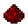
Красная пыль или редстоун (Redstone Dust) - специальный материал, который используется для создания разных прикольных механизмов, вроде железных дорог, переключателей или мин-ловушек.
Красную пыль добывают из красной руды, которая встречается очень глубоко. При разрушении блока красной руды из него выпадают 4-5 единиц красной пыли.
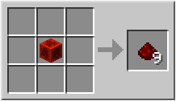
Редстоун также можно распаковать из куба красной пыли. Такой куб можно скрафтить на верстаке из 9 блоков обычной пыли..
Кость
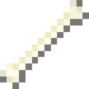
Кость выпадает из скелетов и скелетов-иссушителей при их смерти. Также кости могут быть найдены в сундуках, спрятанных в храмах в джунглях и в пустыне. Ещё один способ получения костей — рыбалка.
Кремень
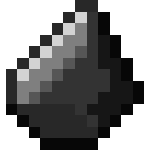
Кремень (Flint) выпадает при добыче гравия. Шанс выпадения кремня из гравия — 10%. Некоторые игроки используют эту характеристику, сооружая штабели ненужного гравия, добывая из них кремень и делая стрелы. Инструмент, зачарованный заклинанием «Удача» III обеспечивает 100% выпадание кремня из гравия.
Визуально кремень похож на уголь, но кремень светлее угля и изображён в другом ракурсе.
Кожа
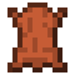
Кожа выпадает из убитых коров, грибных коров и лошадей. Также является редкой добычей с рыбалки.
Используется для крафта брони, которую можно красить, а также для книг и рамок.
Бумага
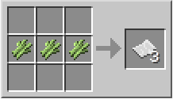
Бумага крафтится из сахарного тростника, который растет около рек.
Иногда бумагу можно найти в подземных крепостях в библиотеке.
Бумага используется для крафта карты, книг и книжного шкафа. На самой бумаге нельзя писать, зато это можно делать в книге с пером.
Слизь
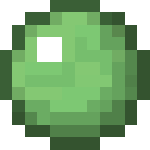
Слизь можно выбить из слизней, когда они становятся маленькими.
Поскольку слизь можно упаковывать в кубы на верстаке, то её также можно получить, распаковывая такие кубы.
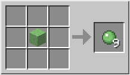
Перо
Перо выбивается с куриц, которые роняют от 0 до 2 перьев при убийстве. В мобильном Майнкрафте иногда перо может упасть с зомби.
Перья используются при крафте стрел, книги с пером и ракеты.
Светопыль
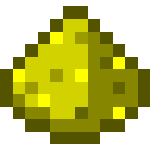
Glowstone Dust или светящаяся пыль выпадает при уничтожении блока светящегося камня, который можно найти в нижнем мире.
Используется в зельеварении, а еще - для крафта светящегося камня, из которого можно делать красивые светильники.
Палка
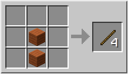
Палка ( Stick) крафтится из двух досок. Это базовый материал для инструментов, факелов, лестниц, заборов и многих других вещей..
Нить
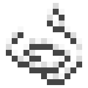
Нить (String) выпадает из убитых пауков, в том числе пещерных, в количестве 0-2 единиц. Также нить выпадает из паутины, если срезать её мечом или ножницами. Паутину можно найти в храме джунглей или заброшенных шахтах. Очень часто нить можно найти в сундуках сокровищницы, по 1-4 штуки.
Нить используется для крафта удочки и лука. Четыре единицы нити можно сложить в один блок шерсти, но для шерсти лучше найти овцу.
Нить может быть расположена на полу в качестве соединяющего элемента для натяжных датчиков. В случае контакта моба, игрока или стрелы с нитью, датчики подают сигнал. Саму нить достаточно сложно заметить, что делает растяжку неплохим средством против гриферов.
Порох
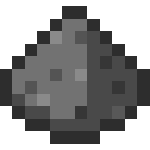
Порох (Gunpowder) выпадает при убийстве криперов, гастов и ведьм. Его можно найти в сокровищницах.
Используется для крафта взрывчатки и в зельеварении.
Древесный уголь
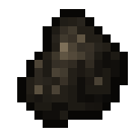
Древесный уголь (Charcoal) имеет те же свойства, что и обычный уголь, но его можно скрафтить из дерева. Годится для создания факелов, использования в качестве топлива для печи и прочего.
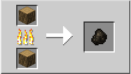
Древесный уголь можно получить, обжигая древесину в печке. Это облегчает выживание в первую игровую ночь, поскольку игрок может создать единицу древесного угля из двух единиц древесины (одна как топливо, другая как материал, который нужно переплавить), а затем, соответственно, факелы, которые необходимы для освещения помещения ночью. Древесный уголь невозможно объединить в одну стопку с обычным. Также из древесного угля нельзя крафтить угольные блоки
Уголь
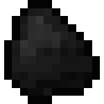
Уголь (Coal) выпадает из угольной руды. Очень важный ресурс, так как из него можно делать факелы для освещения темных шахт и помещений. Уголь является весьма эффективным в качестве топлива для печки, поскольку обладает максимальной энергоёмкостью (горит 80 секунд) по сравнению со всеми другими видами топлива (после ведра с лавой, угольного блока и огненного стержня). Также уголь — единственный вид топлива, который может использоваться для работы вагонетки с печкой, приводя её в движение.
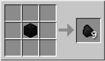
Уголь можно распаковывать из угольных блоков (которые собираются из 9 блоков обычного угля на верстаке).
Кирпич
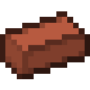
Кирпич (Brick) сам по себе никуда не годен, но из него можно крафтить кирпичный блок - красивый и крепкий материал для строительства. А еще из него можно сделать цветочный горшок.
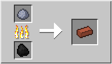
Чтобы получить кирпич - обожгите глину в печке.
Глина

Глина (Clay) — это материал, добываемый из глиняных блоков. Группы глиняных блоков обычно можно найти на дне неглубоких водоёмов, и добывать эти блоки лучше всего лопатой. Из одного глиняного блока выпадает 4 шарика глины. Залежи глины проще всего найти под водой в болотах, но глина также генерируется под реками, а на дне океанов находятся значительные её запасы.
Из шариков глины можно скрафтить глиняные блоки или испечь кирпичи. Из кирпичей можно сделать кирпичные блоки или цветочные горшки, а из глиняных блоков, начиная с Minecraft 1.6, можно путём обжига получить обожжённую глину, которую, в свою очередь, можно покрасить.
Книга
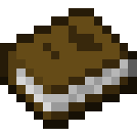
Книга (Book) крафтится из бумаги и кожи. В крепостях можно встретить сундуки, в которых попадаются книги и бумага.
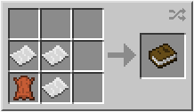
Книги используются для создания книжных шкафов, которые нужны для стола зачарований. Также можно зачаровать саму книгу на столе. Книга получит одно или несколько случайных зачарований соответствующего уровня, которые можно перенести на предмет с помощью наковальни.
Плод коруса
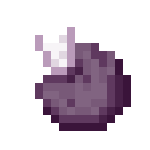
Плод коруса (Chorus Fruit) — еда. Выпадает при разрушении растения коруса, которое растет в Крае.
Плод восстанавливает 2 единицы голода и 2.4 насыщения, при этом телепортирует игрока в случайное место на поверхности в радиусе ±8 блоков, на манер телепортации странника Края. Плод имеет секундную задержку перед повторным использованием. При этом его иконка побелеет. В отличие от жемчуга Края не отнимает здоровье при телепортации. Поедание плода в воздухе телепортирует на поверхность. Это позволяет избегать урона от падения при битве с шалкерами, однако ему не стоит доверять на все 100%. Иногда можно получить весь урон от падения, иногда не получить его вообще. Плод коруса также помогает быстро избежать атакующего противника. Не рекомендуется использовать, если поблизости есть лава. Не работает под водой на глубине и на поверхности.
Используется для создания приготовленного плода коруса
Приготовленный плод коруса
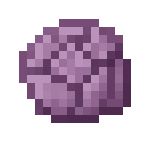
Приготовленный плод коруса (Chorus Fruit Popped) - это плод коруса, растения из Края, который запекли в печке.
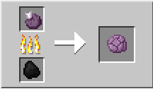
Приготовленный плод коруса нельзя съесть, но он нужен для крафта пурпурного блока и стержня Края.
Призмариновый осколок
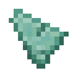
Призмариновый осколок (Prismarine Shard) — ресурс, выпадающий из стражей подводных крепостей. Из убитых стражей выпадает 0-2 призмариновых осколка (максимум 5 с оружием, зачарованным на Мародёрство).
Используется для крафта призмарина, призмаринового кирпича, темного призмарина и морского фонаря.
Призмариновый кристалл
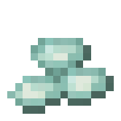
Призмариновый кристалл (Prismarine Crystals) выпадает при убийстве стража морской крепости. Также выпадает при разрушении морского фонаря.
Используется при крафте морского фонаря, вместе с призмариновыми осколками.
Кроличья шкурка
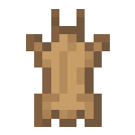
Кроличья шкурка (Rabbit Hide) выпадает из кроликов в Майнкрафте. Из четырех кроличьих шкурок можно скрафтить большую кожу, если рядом нет коров.
Кварц
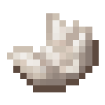
Кварц Нижнего мира (Nether Quartz) — материал, который выпадает из кварцевой руды Нижнего мира. Служит для крафта датчика дневного света, компаратора, кварцевого блока, диорита и гранита.
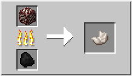
Кварцевая руда, добытая киркой с «Шёлковым касанием», может быть переплавлена в кварц, однако, это очень неэффективный способ добычи кварца.
Золотой самородок
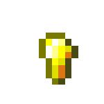
Золотой самородок (Golden Nugget) — это предмет, выпадающий из зомби-свиночеловека. Может выпасть 1-2 золотых самородков.
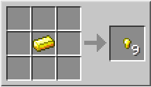
Золотой самородок можно скрафтить из золотого слитка, разбив его на верстаке. 1 слиток генерирует 9 самородков.
Используется для крафта золотой моркови или сверкающего ломтика арбуза, которые используются для зелий (ночное видение, к примеру). Также из 9 золотых самородков можно сложить 1 золотой слиток на верстаке.
Адский кирпич
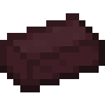
Адский кирпич (Nether Brick) получается, если обжечь адский камень на печке.
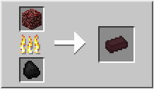
Сам по себе почти бесполезен, но из адского кирпича можно скрафтить блок адского кирпича, который более темный, чем обычный кирпичный блок.
Звезда Нижнего мира
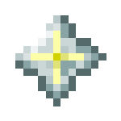
Звезда Нижнего мира (Nether Star) выпадает из иссушителя. Выпадает всегда, но иссушитель - это босс, его очень трудно победить.
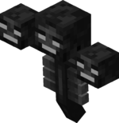
Звезда нижнего мира используется для крафта маяка, который дает луч света в небо, а еще накладывает на игроков рядом положительные чары.
Еда
Инструменты
Оружие
Броня
Разные инструменты
часы карта компас